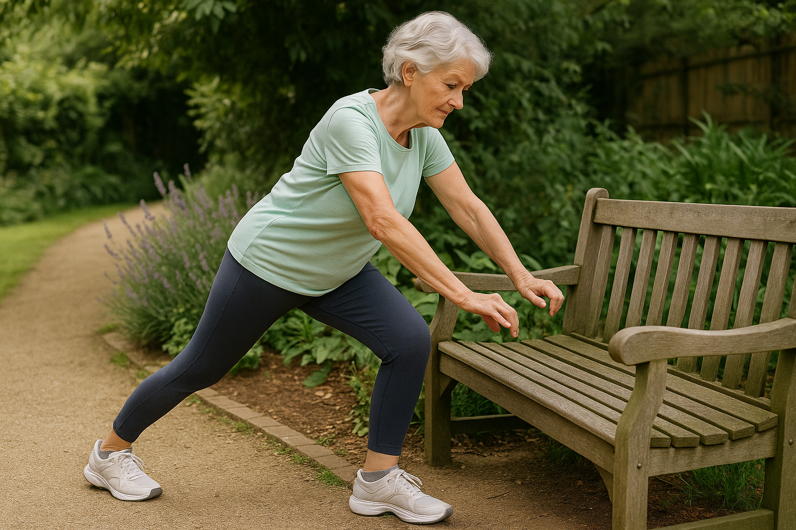
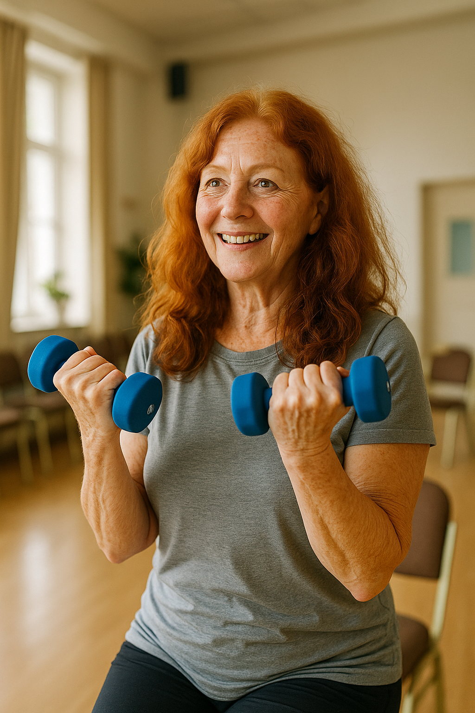
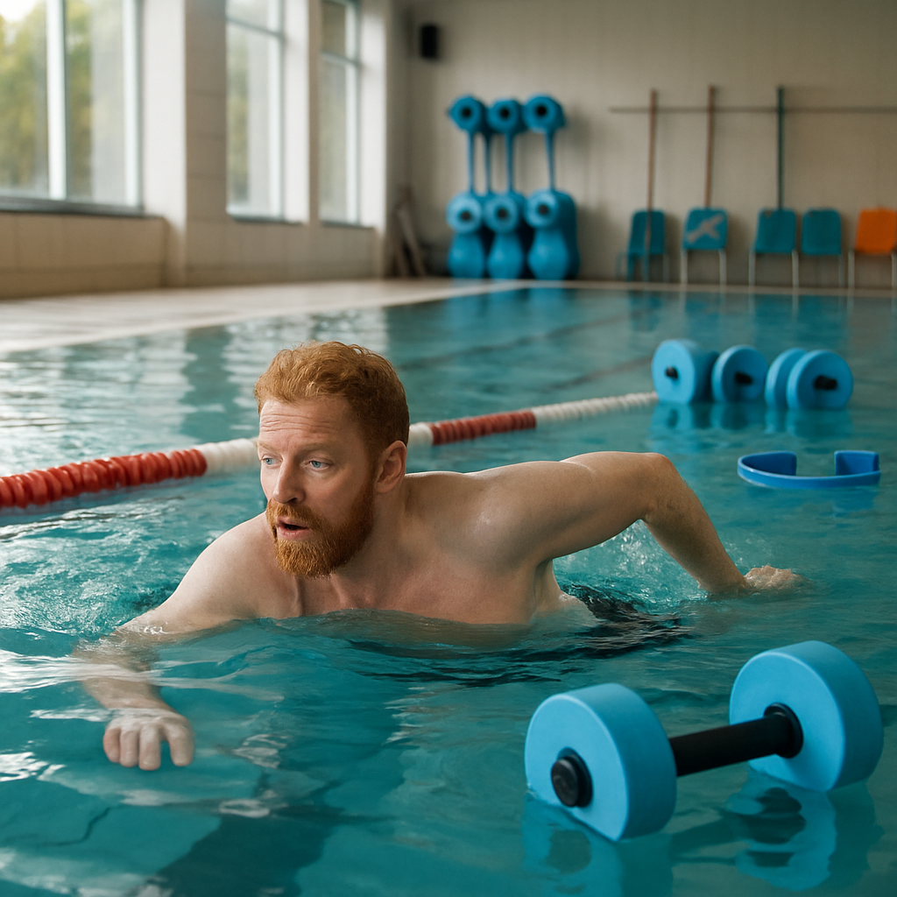
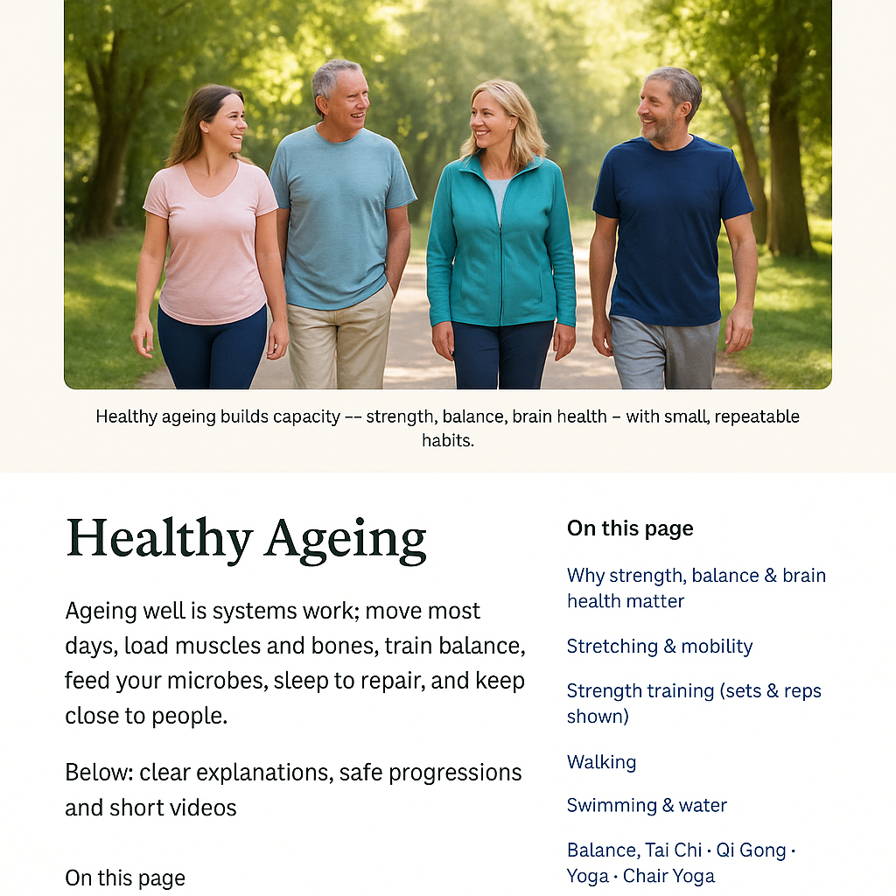

Healthy ageing builds capacity — strength, balance, brain health — with small, repeatable habits.
Healthy Ageing
Ageing well is systems work: move most days, load muscles and bones, train balance, feed your microbes,
sleep to repair, and keep close to people. Below: clear explanations, safe progressions, and short videos.
1) Why strength, balance & brain health matter
Muscle & bone: after ~50, we naturally lose muscle and bone unless we load them. Strength = independence.
Balance: prevents falls (a major cause of injury). It’s trainable — even later in life.
Brain: movement + sleep + a fibre-rich diet support memory and mood.
Microbiome: gut microbes influence inflammation, metabolism, and gut–brain signalling.
2) Stretching & mobility (move better, hurt less)

Warm joints first. Breathe out longer than in to reduce muscle guarding.
Daily warm-up (6–8 minutes)
Neck & shoulder circles × 8
Arm swings, thoracic rotations × 8
Hip circles × 8, ankle circles × 10 each
Calf stretch (wall) 2 × 20s each side
Swap VIDEO_ID_GOFORLIFE_WARMUP with a Go4Life warm-up ID.
Mobility tips
Warmth helps: shower or heat pack 5–10 min before.
Move in a comfortable range. No fast bouncy stretches.
Finish with a longer exhale to downshift the nervous system.
Common tight spots
Calves/ankles → affects balance & walking
Hips/glutes → stairs, getting up from chairs
Thoracic spine → posture & shoulder function
3) Strength training (bones, joints, independence)

2–3 short sessions weekly protect muscle and bone. Progress slowly, safely.
Starter circuit (10–15 minutes)
1) Sit-to-Stand 2–3 sets × 8–12 reps
From a chair, stand up; sit down slowly. Progress by pausing 2s at the bottom or holding light weights.
2) Wall Push-ups 2–3 × 8–12
Hands on wall, body straight. Progress to kitchen-counter push-ups.
3) Hip Hinge (back-safe) 2–3 × 8–12
Hands on thighs, push hips back, slight knee bend, long spine; stand tall. Progress by holding a light weight.
4) March & Balance 2 × 30–45s
Standing march. Hold a chair if needed. Progress to single-leg stands 10–20s each.
Rest 30–60s between moves. New or multiple conditions? Check with your clinician first.
Bone health
Include weight-bearing moves (standing, step-ups). Add gentle impact (heel drops) if safe. Vitamin D + calcium support bone turnover.
Joints & arthritis
Short, frequent sessions beat long ones. Warm up well; finish with a gentle mobility cool-down.
Progression
When 12 reps feel easy, add 0.5–1 kg or a set. Keep tempo slow and controlled.
4) Walking (foundation for heart, brain & mood)
Any pace counts. Add tiny brisk bursts for extra heart/brain benefit.
Cadence: easy talk pace; sprinkle in 1–3 minute brisk intervals.
Posture: tall through the crown; relaxed shoulders; arm swing.
Feet: roll through the foot; safe uneven paths challenge balance.
Brain: nature + company = less stress, better adherence.
5) Swimming & water (low-impact, whole-body)

Water supports joints and provides resistance — ideal for sore knees, hips, and backs.
Why it helps
Buoyancy reduces joint load; water resistance builds strength & endurance.
Can calm the nervous system; supports temperature control.
Getting started
Begin 15–20 minutes; build 2–5 minutes weekly.
Aqua-aerobics provides structure and social support.
Safety
Warm shoulders/hips before; exit slowly to avoid dizziness.
Learn new skills (language, music, crafts) + social engagement.
Combine movement with thinking (dance steps, garden planning).
Hearing & vision
Untreated hearing or vision loss increases cognitive load. Get checked; use aids consistently.
12) Community, purpose & mood

People keep people going. Movement is easier — and more fun — together.
Join a walking group, swim session, or gentle class (50+ or beginners).
Volunteer or join a club for rhythm and purpose.
Low mood or anxiety? Speak with your GP; see Depression and Anxiety.
Important Note
The information on this page is for general understanding and support. It is not a substitute for professional medical, psychological, or legal advice.
If you feel unable to keep yourself safe or someone else is at risk, call 999 (UK) immediately. If you’re outside the UK, contact your local emergency number.
For non-emergency concerns, consider speaking with a qualified health professional or one of the support services listed on our Wellbeing pages.

12) Community, purpose & mood